CAFÉ DES PARENTS · MÉMOGAME
Aider son enfant
à mieux apprendre
grâce aux sciences cognitives
Avec le Professeur Synapse · Lycée Jeanne d’Albret
CAFÉ DES PARENTS
« Mémogame » : pourquoi ce jeu ?
🧠 Découvrir
les bases des sciences cognitives au service des apprentissages de nos enfants.
🎲 Vivre
les principes en jouant, en équipe, plutôt que de les écouter.
🏠 Repartir
avec des gestes simples pour accompagner votre enfant à la maison.
LANCEMENT DE LA SÉANCE
Le Professeur Synapse a un message pour vous !
Écoutez bien : il vous présente votre mission du jour.
PLACE AU JEU
Le tableau de bord de la séance
⏱️ Le chrono
Le temps restant pour toutes les équipes, avec l’alerte des 10 dernières minutes.
✅ Les missions
Après chaque mission réussie, un membre de l’équipe vient l’inscrire auprès du professeur.
🎵 L’ambiance
Une musique au choix, qui s’accélère à la fin, et un jingle quand une équipe a fini.
🔓 Le coffre est ouvert
Bravo ! Chaque équipe a apporté sa lettre
C
O
R
T
E
X
Six équipes, six lettres, un seul mot : CORTEX, la couche du cerveau où se construisent les apprentissages.
LE CADRE
Les 4 piliers de l’apprentissage
🎯
Attention
On ne retient que ce sur quoi on se concentre.
✋
Engagement actif
Le cerveau apprend en cherchant, pas en regardant.
💬
Retour sur l’erreur
Se tromper puis être corrigé vite : on progresse.
🌙
Consolidation
Répéter dans le temps et dormir pour ancrer.
D’après Stanislas Dehaene, Apprendre ! (Odile Jacob, 2018)
CE QUE VOUS AVEZ VÉCU
Vos missions, une à une
| Mission | Ce que vous avez fait | Pilier |
|---|---|---|
| 🃏 Les neuromythes | Trier le vrai du faux | Idées reçues |
| 👓 La phrase floue | Chercher, déchiffrer, reformuler | Engagement actif |
| 🎯 Ouvrez bien l’œil | Repérer l’essentiel sans se disperser | Attention |
| 💬 Le défi indonésien | Se tester, se tromper, être corrigé | Retour sur l’erreur |
| 📉 La courbe de l’oubli | Lire comment on oublie… et comment l’éviter | Consolidation |
| 🔤 Le mot mystère | Retrouver le vocabulaire des piliers | Les 4 piliers |
| 🎁 Défi de Stroop (bonus) | Lire la couleur, pas le mot | Attention |
RETOUR SUR LE JEU · MISSION 1
Les neuromythes
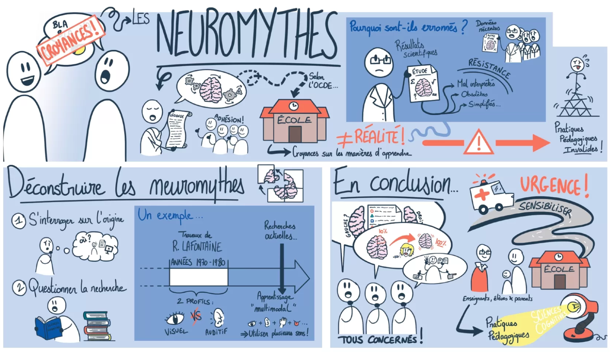
COMPRENDRE
Aider les enfants à comprendre comment ils apprennent
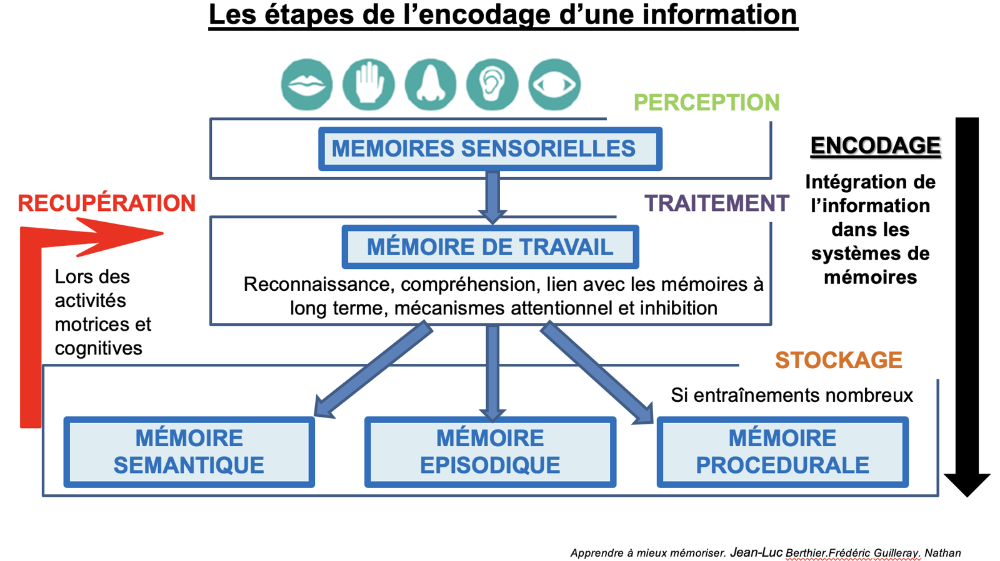
🧭 Encoder, stocker, récupérer
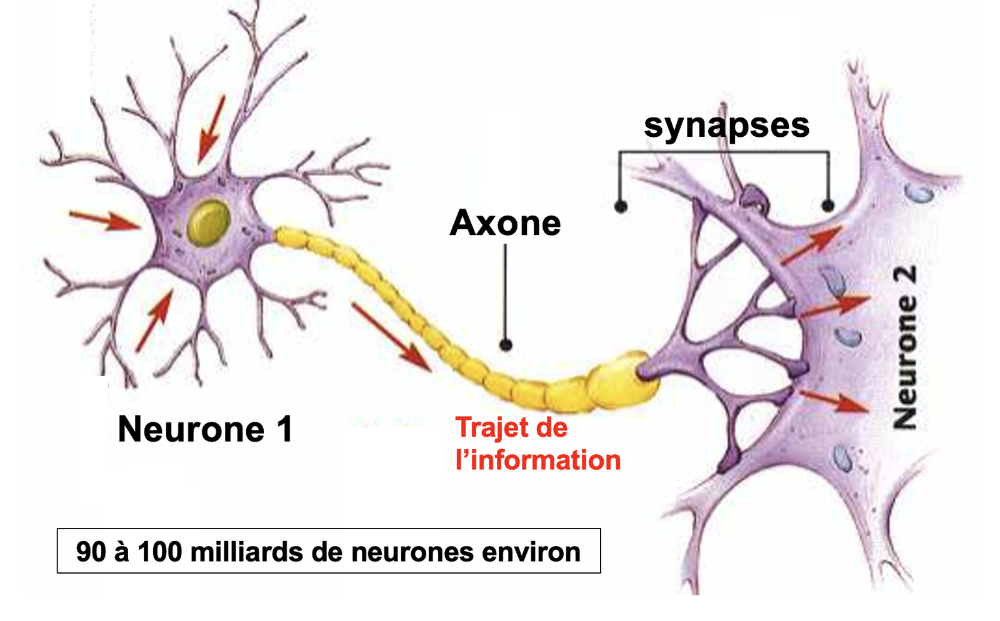
🔗 Renforcer les connexions
PILIER 1 · ATTENTION
L’attention n’est pas une, mais plusieurs
🎯 Définition : l’attention, c’est l’ensemble des processus qui permettent de sélectionner et de traiter en priorité une information pertinente pour réaliser une tâche motrice ou cognitive.
🚨 L’alerte
Être éveillé, prêt à réagir… et le rester dans la durée. Elle baisse avec la fatigue : d’où l’intérêt des pauses.
🔦 L’attention sélective
Le projecteur : on éclaire une information et on laisse le reste dans l’ombre. Ce qui n’est pas éclairé n’est pas appris.
🛑 Le contrôle exécutif
Résister à l’automatisme pour suivre son objectif : c’est lui qui travaillait pendant le défi de Stroop.
🔀 L’attention divisée
Le multitâche est une illusion : le cerveau alterne, et chaque bascule coûte du temps et des erreurs.
⚠️ Une notification capte l’attention malgré nous et détourne le projecteur.
VIDÉO · 🎬 À REGARDER ENSEMBLE
Les écrans et le cerveau
📱 Le téléphone portable et l’attention
Steve Masson, chercheur en neuroéducation · « Cerveau et apprentissage »
Pendant la vidéo, cherchez :
Que devient l’attention quand le téléphone est à portée de main pendant le travail ?
Quel conseil pourriez-vous appliquer dès ce soir à la maison ?
Scannez pour revoir la vidéo à la maison
APRÈS LA VIDÉO · LE TÉLÉPHONE À LA MAISON
Protéger l’attention pendant les devoirs
📵
Le téléphone dans une autre pièce
Même éteint et posé à côté, il attire une partie de l’attention.
🔕
Une seule fenêtre ouverte
Notifications coupées, un seul onglet : celui du travail en cours.
⏱️
Des pauses prévues
25 minutes de travail concentré, puis une vraie pause : l’écran devient une récompense, pas une interruption.
À la maison, on peut le décider ensemble, et montrer l’exemple.
PILIER 1 · MAINTENIR L’ATTENTION
Le rôle majeur du sommeil
🧹 Nettoyer et trier
La nuit, le cerveau élimine ses toxines et oublie les informations inutiles.
🧠 Consolider
Il range les apprentissages de la journée et prépare l’attention du lendemain.
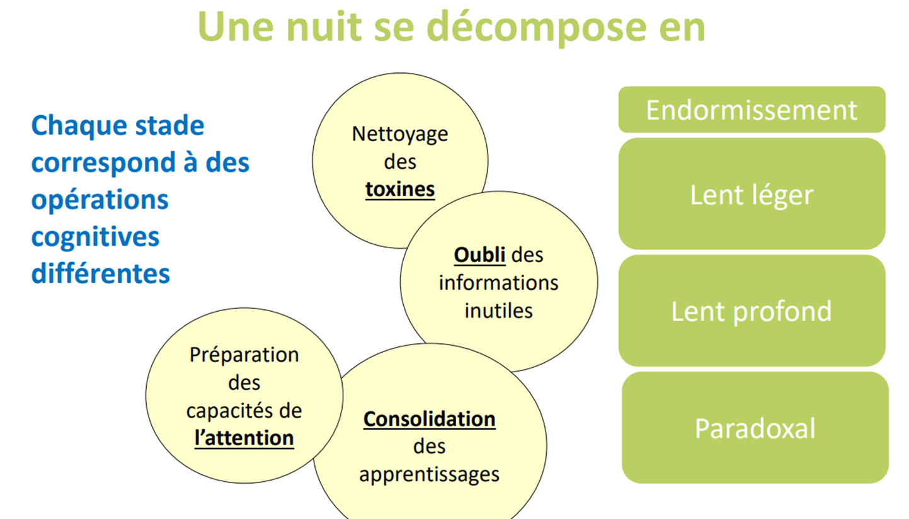
PILIER 1 · MAINTENIR L’ATTENTION
La méthode Pomodoro
⏱️ 25 + 5
25 minutes de travail concentré, puis 5 minutes de pause.
☕ La vraie pause
Après 4 sessions, une pause de 20 à 30 minutes.
📵 Les règles
Un minuteur, un seul objectif par session, le téléphone loin.
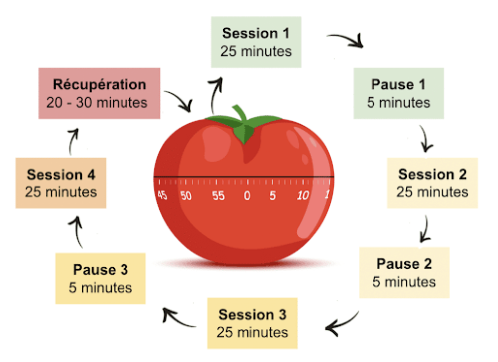
PILIER 2 · ENGAGEMENT ACTIF
Se tester fait mieux retenir que relire
😴 Ce qui rassure… mais retient peu
Relire trois fois sa leçon
Surligner tout le chapitre
Recopier proprement son cours
💪 Ce qui fait vraiment retenir
Réciter sans regarder, puis vérifier
Répondre à des questions, faire des flashcards
Expliquer la leçon à quelqu’un d’autre
À la maison : « Explique-moi ce que tu as appris aujourd’hui » vaut mieux que « Tu as relu ta leçon ? »
PILIER 2 · ENGAGEMENT ACTIF
Le testing : se tester plutôt que relire
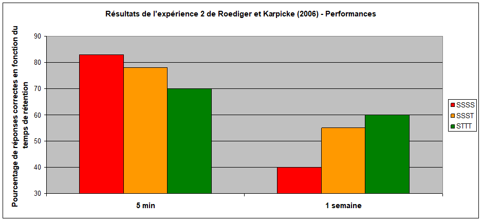
📊 Réussite à 5 min et à 1 semaine
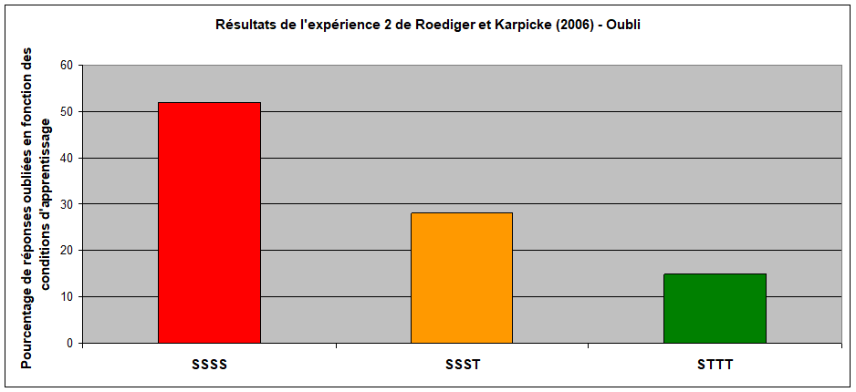
📉 Oubli au bout d’une semaine
S : étude du texte (7 min) · T : test sur le texte. Relire (SSSS) aide à court terme ; se tester (STTT) fait mieux retenir à long terme.
Roediger & Karpicke (2006), Test-Enhanced Learning: Taking Memory Tests Improves Long-Term Retention
PILIER 2 · ENGAGEMENT ACTIF
Se tester active davantage le cerveau
🔴 Test · 🔵 Relecture
En rouge, les régions plus actives quand on se teste ; en bleu, quand on relit.
🧠 Les régions
A : lobe pariétal inférieur gauche · B : cortex cingulaire antérieur · C : précunéus · D : gyrus frontal supérieur
Un traitement du sens plus élaboré
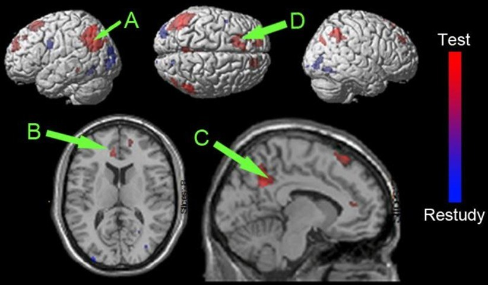
Lindh (2013), Neurocognitive processes during repeated study and repeated testing

PILIER 3 · RETOUR SUR L’ERREUR
Se tromper n’est pas échouer :
c’est une étape pour apprendre.
Essayer
Le cerveau fait une prédiction, même fausse.
Être corrigé vite
Un retour rapide et précis permet d’ajuster.
Recommencer
On réessaie plus tard pour vérifier que c’est acquis.
PILIER 4 · CONSOLIDATION (MISSION 2)
La courbe de l’oubli… et comment la contrer
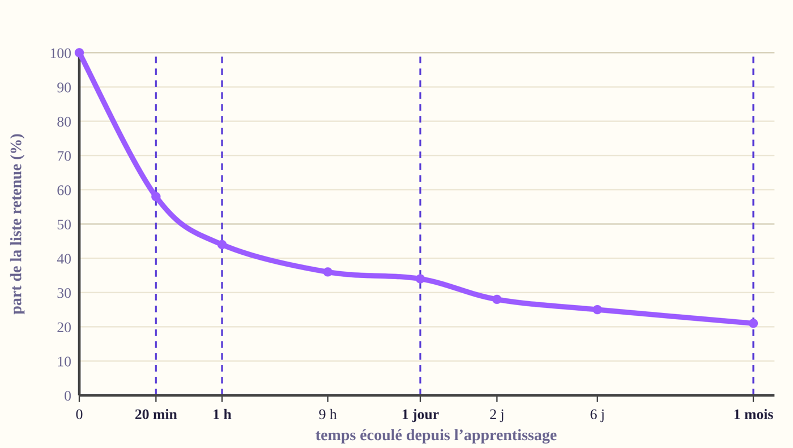
📉 La courbe d’Ebbinghaus (1885)
Sans réactivation, on oublie plus de la moitié en un jour.
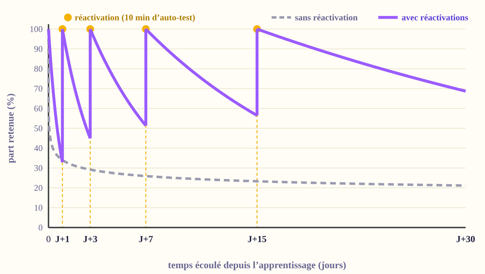
🔁 L’effet des réactivations
Chaque rappel remonte le souvenir, qui s’efface ensuite de moins en moins vite.
DES OUTILS POUR APPRENDRE
Faire une carte mentale
🌳 Trier et relier
Une idée centrale, des branches, des mots-clés et des images.
💪 La refaire de mémoire
Puis la comparer au cours : c’est là qu’on retient le plus.
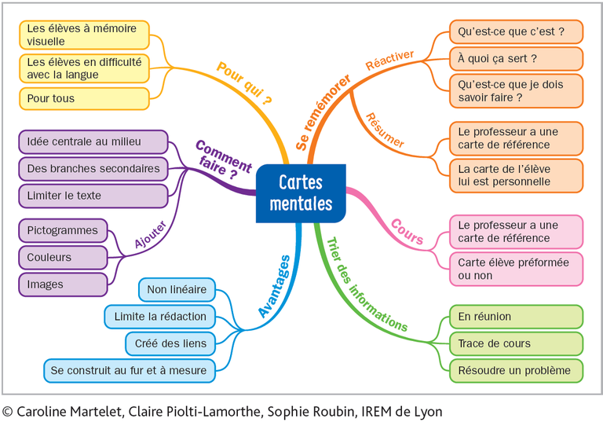
DES OUTILS POUR APPRENDRE
Comprendre, mémoriser, planifier
📄 La fiche mémo
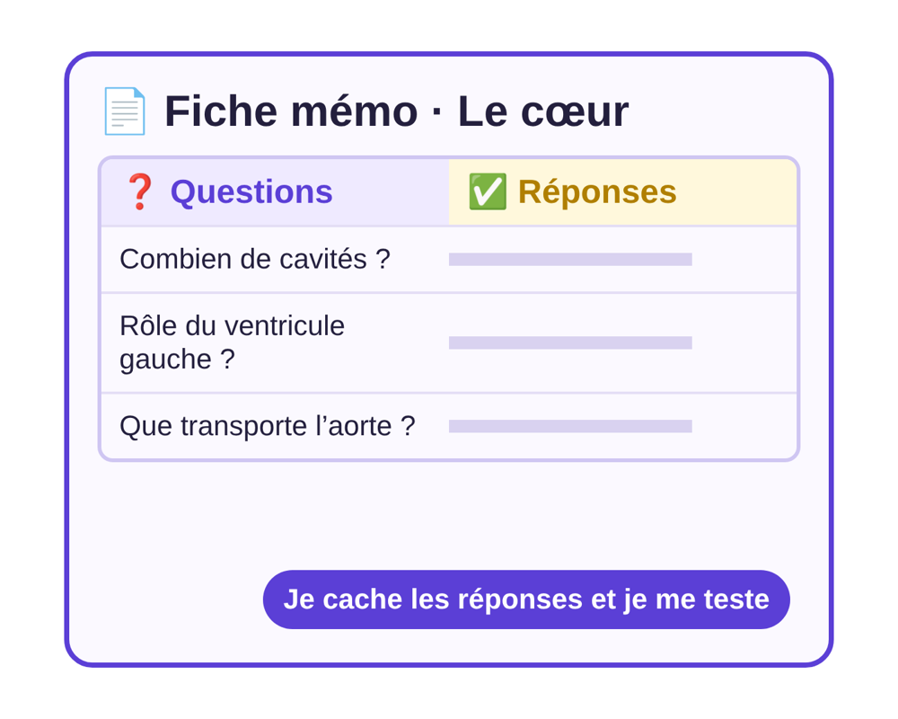
Questions à gauche, réponses à droite : on cache et on se teste.
🃏 Les flashcards
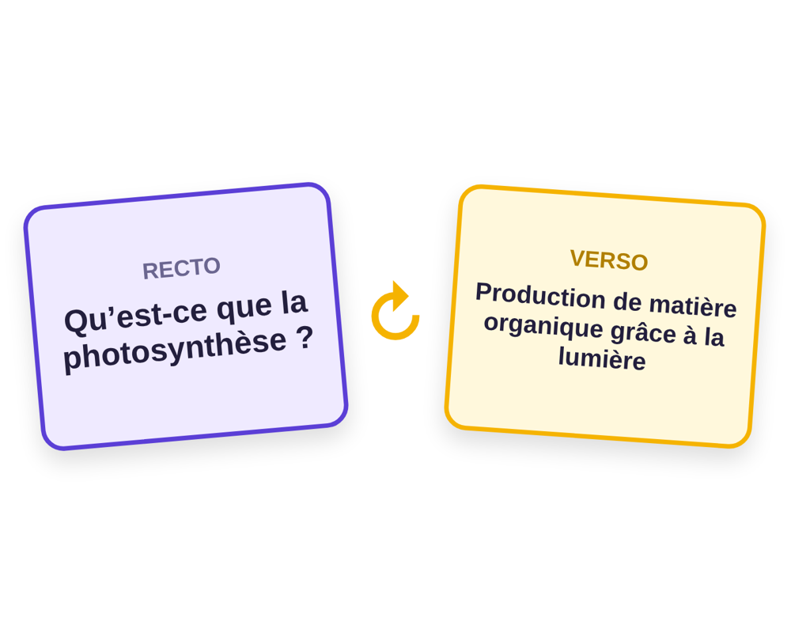
Par exemple avec Réactiv’, proposé par l’académie de Versailles.
📅 Planifier
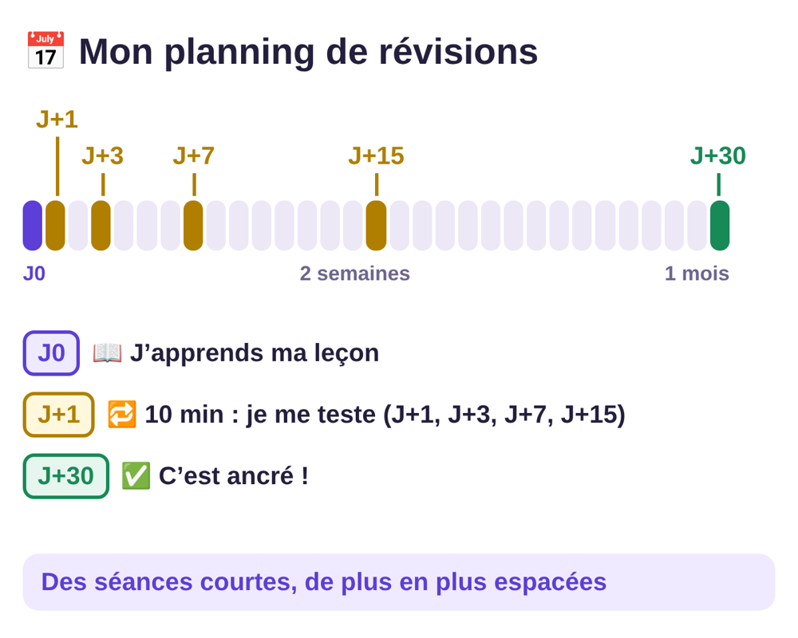
L’apprentissage espacé : répartir les révisions dans le temps.
BILAN
Les 4 piliers de l’apprentissage
🎯 Attention
Un filtre à canaliser
✋ Engagement actif
Un organisme passif n’apprend pas
🧠
Apprendre
🌙 Consolidation
Répéter dans le temps, dormir
💬 Retour d’information
Des itérations pour corriger
À LA MAISON
Cinq gestes simples pour aider votre enfant
1
Demander « explique-moi » plutôt que « tu as relu ? »
Engagement actif
2
Mettre le téléphone dans une autre pièce pendant le travail
Attention
3
Dédramatiser l’erreur et corriger rapidement, sans juger
Retour sur l’erreur
4
Réviser un peu chaque jour, pas tout la veille
Consolidation
5
Protéger le sommeil, surtout la veille d’un contrôle
Consolidation
ZOOM · TDAH
TDAH : un chef d’orchestre vite débordé
Le « chef d’orchestre » du cerveau choisit sur quoi se concentrer, freine les envies d’agir et garde la consigne en tête. Avec un TDAH, il tient plus difficilement l’orchestre :
🔦 Le filtre laisse tout passer
Un bruit, un mouvement, une pensée : tout détourne l’attention.
🛑 Le frein est faible
Difficile d’attendre, de rester assis, de ne pas couper la parole.
📝 Le post-it mental s’efface
La mémoire de travail retient peu : la consigne est oubliée en route.
🔋 La batterie se vide vite
Rester attentif longtemps coûte beaucoup plus d’énergie.
Ce n’est ni de la paresse, ni un défaut d’éducation : c’est un trouble du neurodéveloppement, qui concerne environ 5 % des enfants.
Source : Haute Autorité de santé, recommandations TDAH enfants et adolescents (2024)
ZOOM · TDAH
Ce qui aide… et aide tous les élèves
🏫 En classe
Être placé près du professeur, loin de la fenêtre et de la porte
Une consigne à la fois, courte, écrite au tableau
Un travail découpé en étapes, vérifié au fur et à mesure
Le droit de bouger : distribuer, effacer le tableau
Des encouragements rapides et discrets
🏠 Pour les devoirs
Même lieu, même heure, bureau dégagé, téléphone ailleurs
Une check-list des tâches à cocher
Des séances courtes (10 à 15 min), minuteur visible, pause active
Se faire interroger à l’oral plutôt que relire
Valoriser l’effort, pas seulement la note
ZOOM · TDAH
Des outils pour se recentrer
🎧
Le casque antibruit
Il coupe les bruits de la classe ou de la maison pendant le travail seul et les évaluations.
🟠
La balle antistress
Malaxer une balle occupe les mains et canalise le besoin de bouger, sans quitter sa place.
✏️
Dessiner, griffonner
Gribouiller en écoutant peut aider à rester attentif et à mieux retenir.
À tester avec l’enfant : chaque outil aide certains élèves, pas tous. Il s’utilise discrètement, sans devenir un jeu, et se convient avec l’enseignant.
ET APRÈS ?
Quels thèmes souhaiteriez-vous aborder lors d’un prochain café des parents ?
Vos idées sont les bienvenues : écrivez-les sur votre fiche ou dites-les-nous.
POUR FINIR
Merci de votre attention !
💬 Place à vos questions